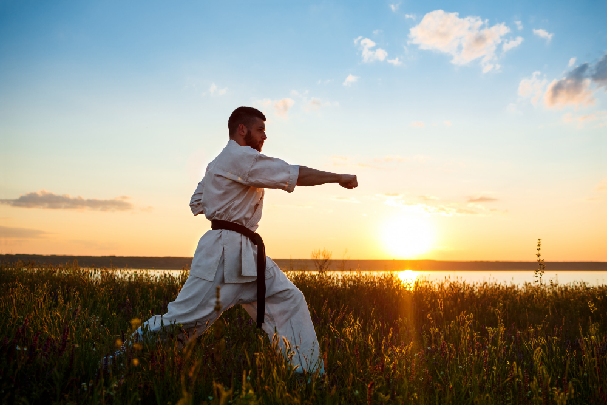
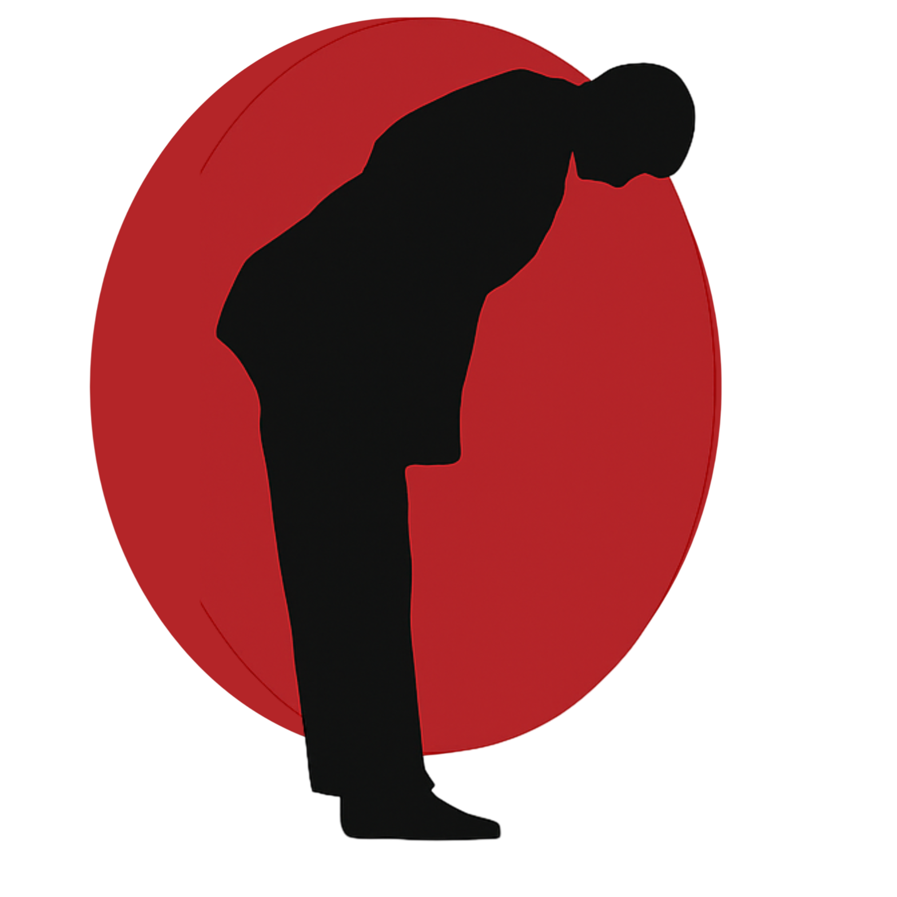
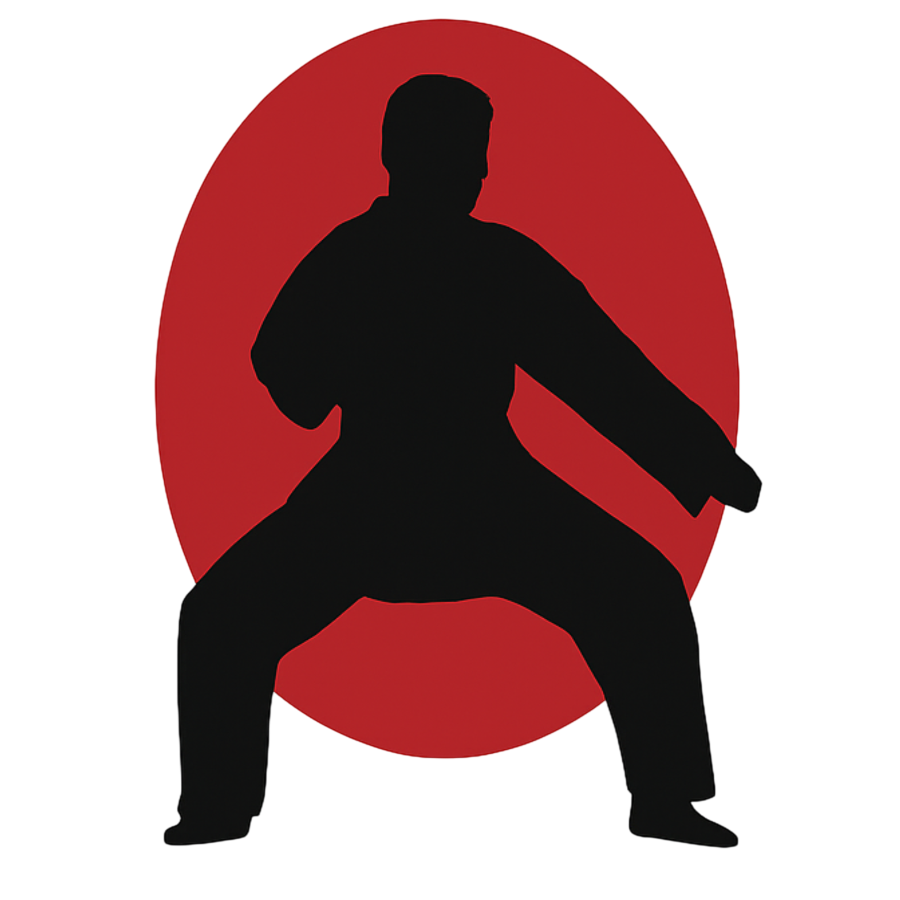
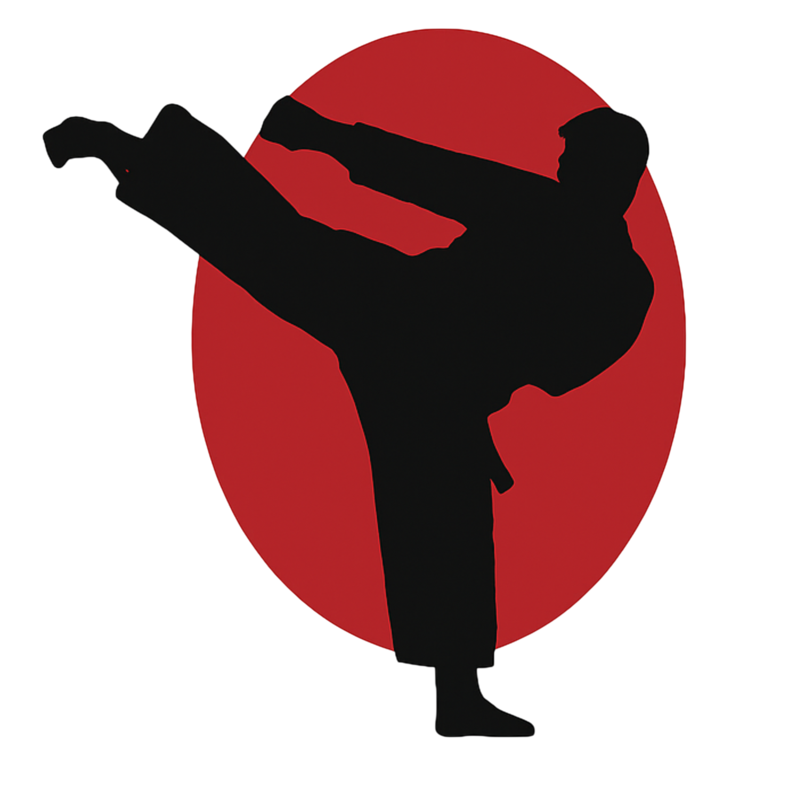

Dia Mundial do Karatê: A Arte das Mãos Vazias

Disciplina que molda o corpo e fortalece a mente.
O Dia Mundial do Karatê é celebrado globalmente para homenagear uma das artes marciais mais praticadas e respeitadas do planeta. Muito além de técnicas de autodefesa, o Karatê-Do é uma filosofia de vida focada no autoaperfeiçoamento, na resiliência e no respeito mútuo. Esta data celebra a união de praticantes de todas as idades que buscam, diariamente, superar seus próprios limites dentro e fora do tatame.

Respeito (Rei)
O ciclo do treino começa e termina com uma saudação, valorizando o próximo dentro e fora do tatame.

Disciplina (Shitsuke)
A constância nos treinos desenvolve o foco mental necessário para vencer grandes desafios diários.

Caráter (Gigi)
O objetivo final da arte não é a vitória física, mas o completo aperfeiçoamento moral do praticante.